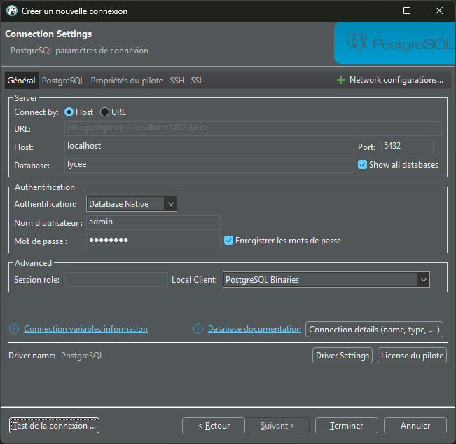
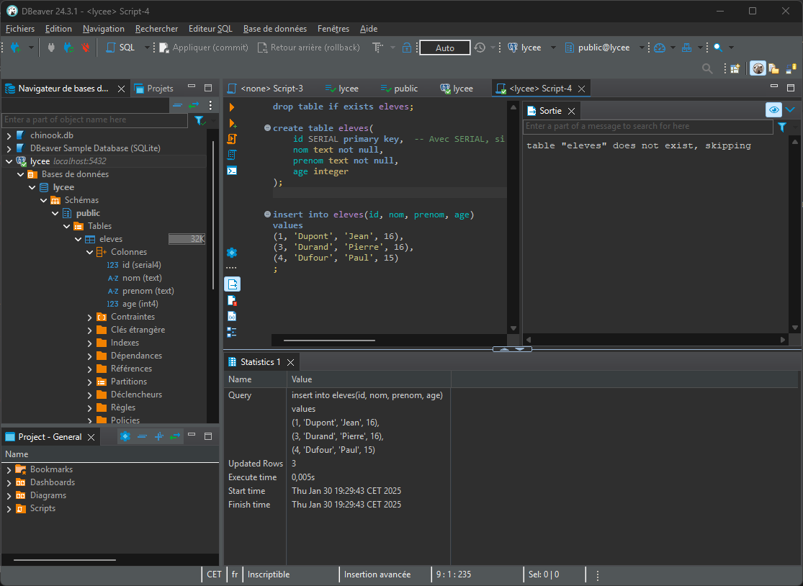

SGBD - Postgresql
Pré-requis
Ces outils doivent être installés (voir la section "les outils"):
- miniforge
- dbeaver
Install & Setup PostgreSQL
Ici, nous allons utiliser PostgreSQL, qui est instalable via conda, dans une version plus ultra pratique pour le développement. Par contre, c'est juste inimaginable en production car toute la sécurité est levée.
Tout ce qui suit se fait dans le Miniforge Prompt.
1. Création et activation d'un environnement à part qui s'appelle outils
conda create -n outils
conda activate outils
Pas dans base
N'utilisez l'environnement base que pour créer et activer des environnements. Votre première action dans un prompt conda doit être d'activer un environnement spécifique.
2. Installation de postgresql
conda install postgresql
Maintenant, nous disposons d'un tas d'outils pour interagir avec postgresql.
3. Initialisation de Postgresql avec un répertoire de données
Chez vous, remplacez P:\\data partout par un autre chemin que vous connaissez sur votre disque.
Pour le mettre à la racine de votre répertoire utilisateur, vous pouvez utiliser %USERPROFILE%\\data à la place.
initdb -D P:\\data
Toutes vos bases de données seront stockées dans ce dossier.
4. Lancement du service Postgresql
pg_ctl start -D P:\\data
A partir de cet instant, un service tourne sur votre machine sur le port 5432. C'est le port par défaut de Postgresql.
Avant de quitter votre ordi
Attention, il faudra quitter proprement le SGBD à l'aide de la commande
pg_ctl stop -D P:\\data
5. Création d'un superutilisateur
Nous allons créer un utilisteur qui a le droit de tout faire sur postgresql.
Ce super utilisateur s'appelle admin et son mot de passe sera password.
(bien entendu c'est la plus over nulle des sécurisations)
createuser --superuser --password admin
Indiquer le mot de passe password
6. Création d'une base de données
createdb lycee
7. Connexion à la base de données avec DBeaver
Maintenant, on peut ouvrir dBeaver pour interagir avec l'instance de postgresql que nous avous lancée. Comme souvent, il y a plein de boutons, mais seulement peu nous intéressent.
Il faut ajouter une "Nouvelle connection" à postgresql sachant que:
- Host: localhost
- Port: 5432
- Database: lycee
- User: admin
- Mot de passe: password

Vous pouvez tester la connexion avec le bouton en bas à gauche.
dBeaver va vouloir télécharger les drivers pour se connecter à postgresql, cliquez sur le bouton télécharger. Il existe beaucoup de drivers pour diverses bases de données. dBeaver ne les récupère que lorsqu'il y a besoin.
Attention
Il faut bien cliquer la case à cocher "show all databases" qui est dans un des onglets selon la version de dBeaver.
Quand c'est bon, cliquez sur terminer.
L'arborescence de gauche ne se met pas à jour automatiquement quand vous créez ou supprimez de nouveaux objets. Il faudra lui demander de se rafraîchir. (F5 ou menu contextuel)
8. Créer les données de base pour le projet:
drop table if exists eleves;
create table eleves(
id SERIAL primary key, -- Avec SERIAL, si on ajoute un enregistrement, l'id est automatiquement créée
nom text not null,
prenom text not null,
age integer
);
insert into eleves(id, nom, prenom, age)
values
(1, 'Dupont', 'Jean', 16),
(3, 'Durand', 'Pierre', 16),
(4, 'Dufour', 'Paul', 15)
;
Voilà à quoi doit ressembler votre arborescence une fois que vous avez exécuté les requêtes ci-dessus:

Utilisation au quotidien
- Démarrer la base de données:
conda activate outils pg_ctl start -D P:\\data - Bosser
- Arreter la base de données:
pg_ctl stop -D P:\\data
FIN
IGNORER CE QUI SUIT
Exercices sur la base de données pagila
Requêtes basiques
- Créez une liste des prénoms et noms de famille de tous les acteurs. Affichez le prénom et le nom de chaque acteur dans une seule colonne. Nommez la colonne "nom_acteur".
- Trouvez l'identifiant, le prénom et le nom d'un acteur dont vous ne connaissez que le prénom: "Joe".
- Trouvez tous les acteurs dont le nom de famille contient les lettres "LI". Cette recherche doit être insensible à la casse et les résultats doivent être triés par nom de famille, puis par prénom.
- En utilisant IN, affichez les colonnes
country_idetcountrypour les pays suivants : Afghanistan, Bangladesh et China. - Ajoutez une colonne
middle_nameà la tableactor. Spécifiez le type de colonne approprié. - Supprimez la colonne
middle_name. - Mettez à jour l'enregistrement de GROUCHO WILLIAMS pour que son prénom devienne HARPO.
- Rétablissez le prénom de GROUCHO WILLIAMS de HARPO à GROUCHO.
Requêtes à jointures
- Affichez le prénom, le nom et l'adresse de chaque client.
- Listez les titres des films et les catégories auxquelles ils appartiennent.
- Affichez les prénoms, noms et adresses e-mail des clients vivant dans la ville de "Aurora".
- Listez les films et les langues dans lesquelles ils sont disponibles.
- Affichez les prénoms et noms des employés (staff) ainsi que le nom de leur magasin.
- Affichez les prénoms et noms des clients ayant loué un film intitulé "Academy Dinosaur".
- Listez les films disponibles dans le magasin avec l'identifiant
1. - Affichez les noms des acteurs ayant joué dans le film "Zorro Ark".
Problème utile
Lister les clients qui sont en retard à la date du jour, en sélectionnant les informations utiles au call center afin de les relancer.
Pour ceux qui ont fini
IMdb met à disposition gratuitement une grosse base de données cinématographique:
https://developer.imdb.com/non-commercial-datasets/
Chargez la dans Postgresql et explorez la.
Pour ceci vous vous intéresserez à la clause COPY de Postgresql.
Ici, tous les moyens sont bons, ChatGPT, google, etc...